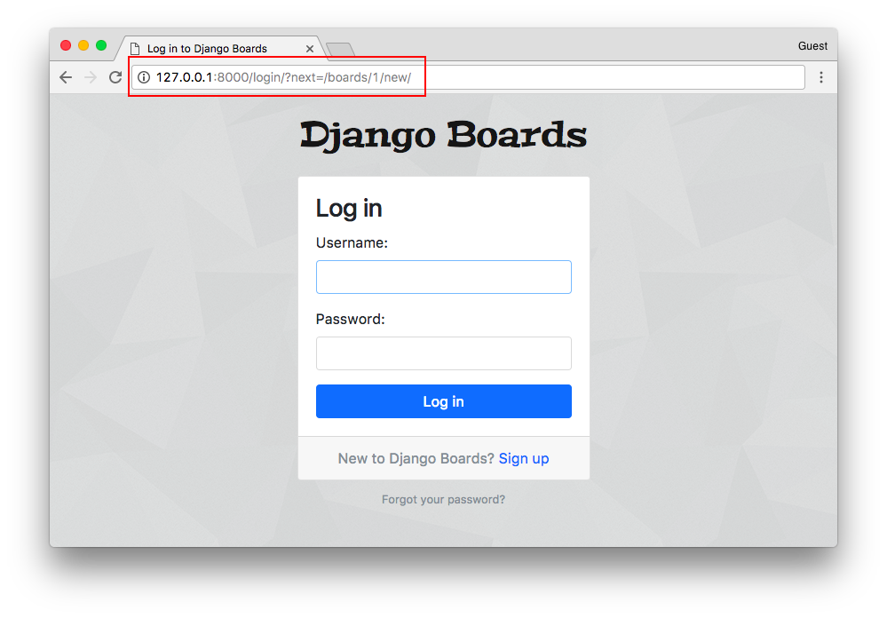

Django入门与实践-第16章：视图
前言
欢迎来到本系列教程的第5部分，在这节课，我们将学习如何保护视图防止未登录的用户访问，以及在视图和表单中访问已经登录的用户，我们还将实现主题列表和回复列表视图，最后，将探索 Django ORM 的一些特性和数据迁移的简单介绍。
保护视图
我们必须保护视图防止那些未认证（登录）的用户访问，下面是发起一个新话题的页面

在上图中，用户还没有登录，尽管他们可以看到页面和表单。Django 有一个内置的 视图装饰器 来避免它被未登录的用户访问：
boards/views.py（完整代码）
from django.contrib.auth.decorators import login_required
@login_required
def new_topic(request, pk):
# ...
现在如果用户没有登录，将被重定向到登录页面：

注意查询字符串 ?next=/boards/1/new/ ，我们可以改进登录模板以便利用 next 变量来改进我们的用户体验，（译注：实际上这步操作不加也没问题）
配置登录后的重定向地址
templates/login.html (查看完整内容)
<form method="post" novalidate>
{% csrf_token %}
<input type="hidden" name="next" value="{{ next }}">
{% include 'includes/form.html' %}
<button type="submit" class="btn btn-primary btn-block">Log in</button>
</form>
现在尝试登录，登录成功后，应用程序会跳转到原来所在的位置。

next 参数是内置功能的一部分（译注：详情请参考Django官方文档）
测试
现在添加一个测试用例确保主题发布视图被 @login_required装饰器保护了，不过，我们还是先来重构一下 boards/tests/test_views.py 文件。
把test_views.py拆分成3个文件：
- test_view_home.py 包含 HomeTests 类 （完整代码）
- test_view_board_topics.py 包含 BoardTopicsTests 类（完整代码）
- test_view_new_topic.py 包含 NewTopicTests 类（完整代码）
myproject/
|-- myproject/
| |-- accounts/
| |-- boards/
| | |-- migrations/
| | |-- templatetags/
| | |-- tests/
| | | |-- __init__.py
| | | |-- test_templatetags.py
| | | |-- test_view_home.py <-- here
| | | |-- test_view_board_topics.py <-- here
| | | +-- test_view_new_topic.py <-- and here
| | |-- __init__.py
| | |-- admin.py
| | |-- apps.py
| | |-- models.py
| | +-- views.py
| |-- myproject/
| |-- static/
| |-- templates/
| |-- db.sqlite3
| +-- manage.py
+-- venv/
重新运行测试，确保一切正常。
现在在 test_view_new_topic.py 中添加一个新测试用例，用来检查试图是否被@login_required保护：
boards/tests/test_view_new_topic.py （完成代码）
from django.test import TestCase
from django.urls import reverse
from ..models import Board
class LoginRequiredNewTopicTests(TestCase):
def setUp(self):
Board.objects.create(name='Django', description='Django board.')
self.url = reverse('new_topic', kwargs={'pk': 1})
self.response = self.client.get(self.url)
def test_redirection(self):
login_url = reverse('login')
self.assertRedirects(self.response, '{login_url}?next={url}'.format(login_url=login_url, url=self.url))
在测试用例中，我们尝试在没有登录的情况下发送请求给 new topic 视图，期待的结果是请求重定向到登录页面。